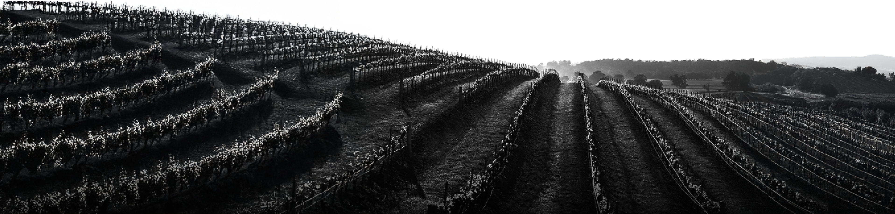
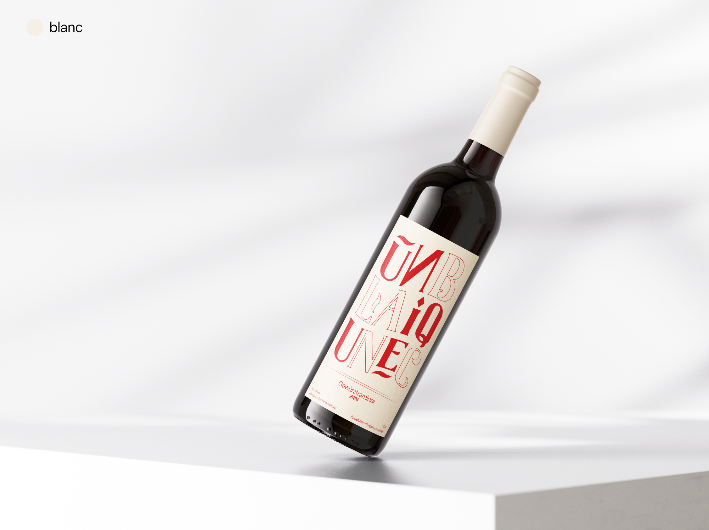
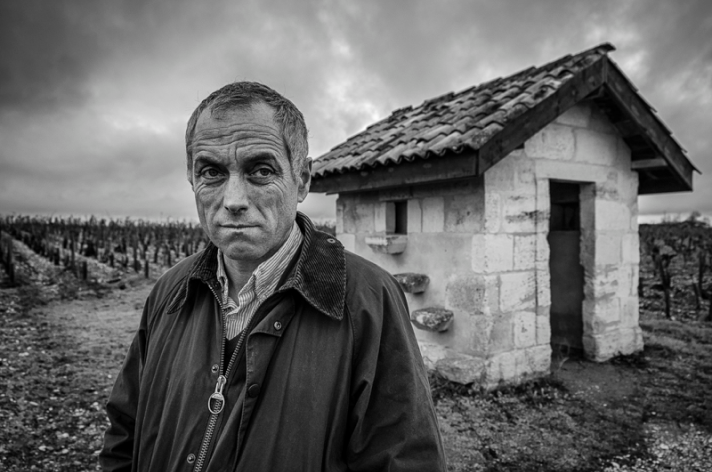
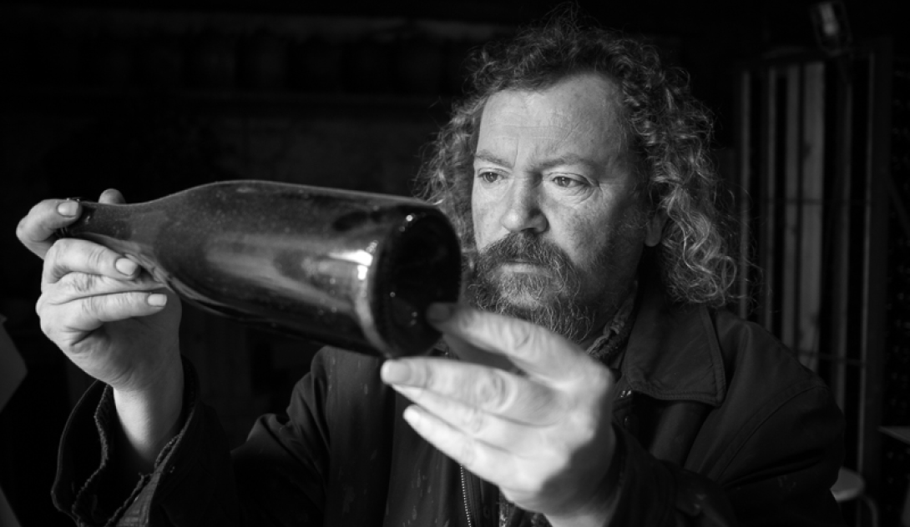
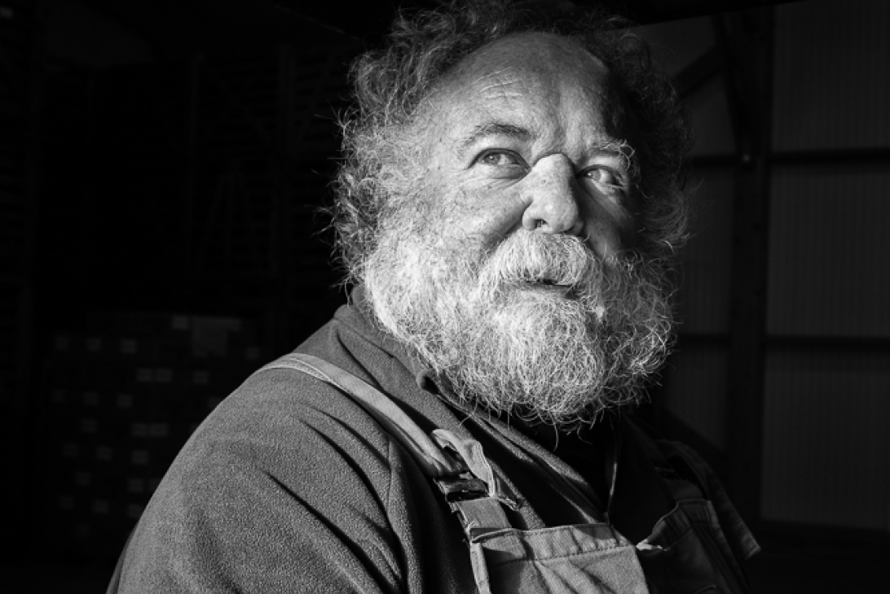
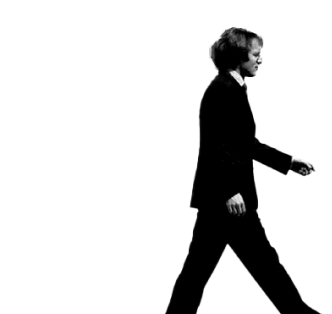

Vins natures
UNIQUE
un gôut sublime


Nouveauté
Chaque années nous renouvelons nos gammes afin de vous apporter
toujours de la nouveauté.

Notre nouvelle gamme de vins natures comprend un gewürztraminer
et un pinot noir pour tout les goûts. De l’épicé avec une touche
de gingembre ou plus doux avec des saveurs de fruits rouges.
Voir la gamme
Tous nos vins
Cette année, nous avons décidé d’apporter deux nouvelles saveurs
encore jamais explorée par la cave à travers un blanc et un
rouge.
Chez UNIQUE, notre passion pour les vins natures
transcende le simple plaisir de la dégustation. Nous croyons
fermement que chaque bouteille raconte une histoire, une
histoire d’authenticité, de respect de la terre et de la vigne.
Philosophie
Notre philosophie repose sur l’harmonie entre la nature et l’art
de vinifier, une danse délicate qui célèbre l’expression pure de
notre terroir.
Plus nos valeurs

Thierry Moreau – Le Gardien des Cépages Ancestraux
Thierry Moreau, vigneron dans le Languedoc, se spécialise
dans la culture de cépages anciens presque oubliés...
Notre équipe

Jean-Michel Lefevre – Le Visionnaire du Terroir
Jean-Michel Dupont, vigneron en Bourgogne, a repris le
domaine familial après des études en viticulture...

Pierre Lemoine – L'Artisan du Vin Naturel
Pierre Lemoine a choisi de produire des vins naturels, sans
soufre ni produits chimiques...
Plus sur nous
Planifiez votre visite
Venez planifier votre visite ou dégustation de la cave
Plongez dans l’univers unique de notre domaine, où tradition et
savoir-faire se mêlent pour créer des vins d'exception. Lors de
votre visite, vous aurez l'opportunité de découvrir nos vignes,
de comprendre les secrets de notre travail en cave, et
d'explorer l’histoire qui fait la richesse de chaque cuvée.
Planifiez votre visite
